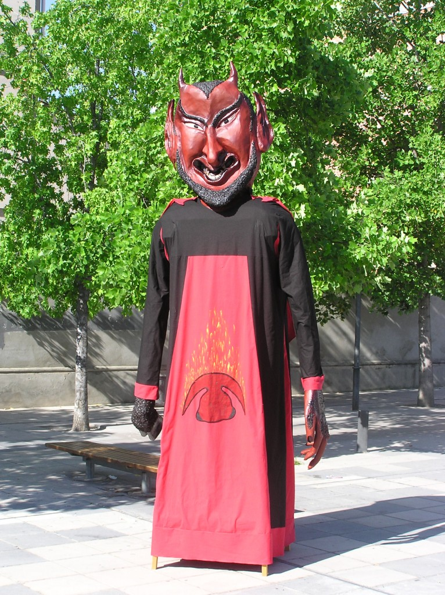

Gegant
Gegant de Sant Antoni
Va néixer per recuperar la tradició gegantera de Llefià i també se’l coneix com el dimoni de Sant Antoni.
- Uns 4 metres
- Menys de 40 kg
On el trobaràs
- A la Biblioteca de Llefià-Xavier Soto.